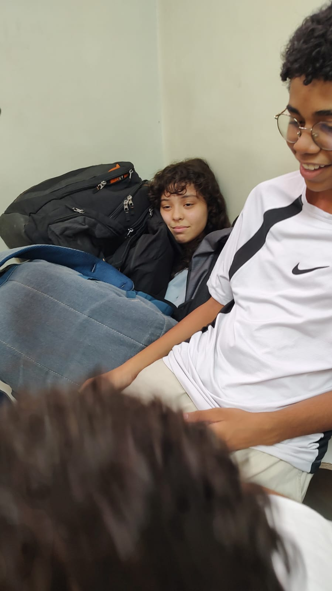
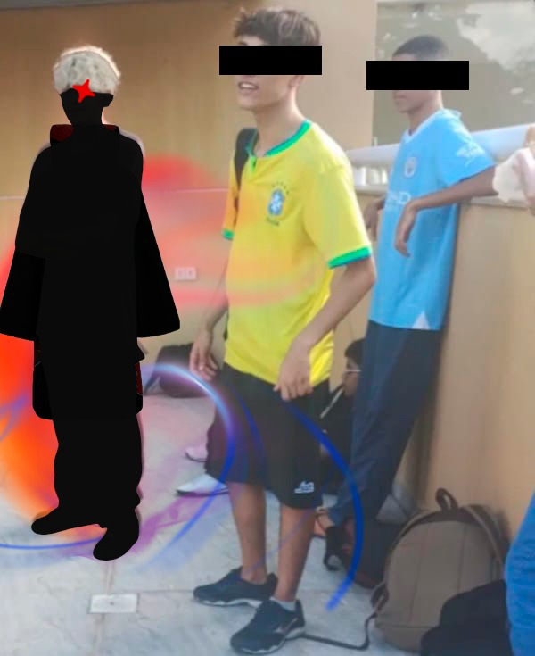

Informações
Informações e noticias mais quentes do goat do cefet, o curso de informatica.
Em meio a um silêncio constrangedor, toda a turma de inf-1
é eternamente grata aos seus veteranos.
Eles, inconformados com a quietude da sala, foram os
primeiros a despertarem algo dentro de cada um dos
calouros (seja o melhor ou o pior deles). O truco também foi,
e continua sendo, uma das maneiras de
socialização mais inusitadas, porém confiável (dizem que Francisco apostou o buraco no truco)
é eternamente grata aos seus veteranos.
Eles, inconformados com a quietude da sala, foram os
primeiros a despertarem algo dentro de cada um dos
calouros (seja o melhor ou o pior deles). O truco também foi,
e continua sendo, uma das maneiras de
socialização mais inusitadas, porém confiável (dizem que Francisco apostou o buraco no truco)
Inf1 demonstra suas habilidades em fazer programa;
alguns jogam Friv, outros Tetris.
Enquanto isso, uma simples linguagem de programação
revela verdades, como “Luis deu a bunda 9128 vezes”
e que “Francisco não é o rei do Truco”. Nessa sexta-feira (dia 23), alguns alunos decidiram andar do C2 até o C1. Segundo eles, “tudo por causa do tédio”. Segundo fontes duvidosas, o presidente Jean torce para os times de futebol do Palmeiras, Flamengo e Botafogo, e descobrem que lpw e a melhor matéria de computaria.
alguns jogam Friv, outros Tetris.
Enquanto isso, uma simples linguagem de programação
revela verdades, como “Luis deu a bunda 9128 vezes”
e que “Francisco não é o rei do Truco”. Nessa sexta-feira (dia 23), alguns alunos decidiram andar do C2 até o C1. Segundo eles, “tudo por causa do tédio”. Segundo fontes duvidosas, o presidente Jean torce para os times de futebol do Palmeiras, Flamengo e Botafogo, e descobrem que lpw e a melhor matéria de computaria.

Muitos estudantes gastam horas de seus dias estudando. Enquanto outros decidem vagabundar no meio da
semana. Alguns alunos de inf1 decidiram ir ao cinema nessa quarta-feira (dia 28) durante o período da
tarde. Uma rinha entre patos e galos se instaurou durante uma pacífica aula de português. A vagabundagem
começou quando Gabriel Cézar, também conhecido como Polinômio, comprou uma briga com o atleticano
Thiérs. Após ser chamado de pato no truco pelo torcedor do atlético, os alunos de T1 de inglês raramente
trabalham durante as aulas. Alguns já possuem um histórico de se atrasarem, enquanto outros enterram os
próprios colegas em mochilas ao final da aula
Nessa semana, foi confirmado o aparecimento de outra figura misteriosa no campus Nova Gameleira; o Papa
Pintos. A intrigante entidade se manifestou em algum lugar dentro do campus 2 nessa quarta-feira (dia
13). Logo após sua primeira aparição, diversas teorias foram formadas sobre ele. Muitos questionam a
veracidade do Papa Pintos e do Homem de Metas, enquanto outros debatem sobre quem venceria uma luta. As
duas supostas lendas urbanas foram muito faladas durante a semana, enquanto um pânico e medo geral se
espalha pela sala. Qual será a próxima vítima? Qual deles atacará primeiro? Seriam os dois, de fato,
pessoas reais? Essas dúvidas ficam no ar, enquanto todos esperam suas respostas.
